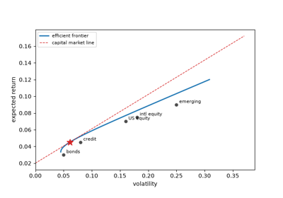
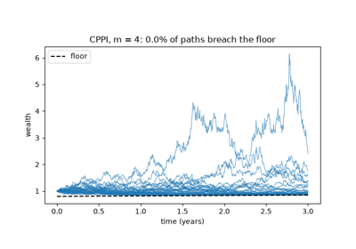
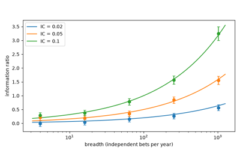
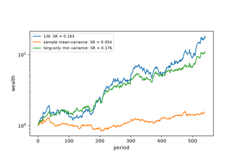

Breakthroughs in Portfolio Theory#
“Diversification is the only free lunch in finance.” – attributed to Harry Markowitz
Before 1952 investment advice meant picking good securities. Harry
Markowitz turned it into a problem about the whole portfolio, its mean
and its variance, and within two decades Tobin, Sharpe and Merton had
turned that problem into a theory with closed-form answers. The answers
proved fragile in practice, because they depend on expected returns and
covariances that are hard to estimate, and much of the later history is
about robustness: growth-optimal and insured strategies, shrinkage,
Bayesian priors, resampling, and allocations that need no expected
returns at all. This chronology traces the ideas behind
financialkit.portfolio.
1952 – Markowitz’s Mean-Variance Analysis#
Harry Markowitz, a graduate student at Chicago, argued that investors should care about the expected return of a portfolio and its variance, and that a portfolio is efficient if no other has a higher mean for the same variance. Because the variance of a sum depends on the covariances, diversification across imperfectly correlated assets lowers risk without lowering return. The efficient portfolios form a frontier, and choosing among them is a matter of taste.
Implementation: financialkit.portfolio.systems.mean_variance.efficient_frontier(),
efficient_portfolio()
and min_variance_portfolio(),
with long-only frontiers solved by scipy.optimize.minimize()
(SLSQP). The example draws the frontier with and without short sales
over a cloud of random portfolios and shows how the weights change
along it.
References: H. Markowitz, “Portfolio Selection,” J. Finance 7 (1952) 77-91.
1956 – The Kelly Criterion#
John Kelly, an engineer at Bell Labs, reinterpreted Shannon’s information rate as the growth rate of a gambler’s capital. Betting the fraction \(f\) of wealth repeatedly, wealth grows like \(e^{g(f)n}\) with \(g(f) = E\log(1 + fX)\), and the fraction that maximizes \(g\) eventually beats every other fixed-fraction strategy with probability one. Edward Thorp took it to the blackjack tables and then to Wall Street.
Implementation: financialkit.portfolio.systems.growth.kelly_fraction(),
kelly_growth_rate(),
kelly_wealth_paths() and,
for lognormal assets, kelly_portfolio().
The example compares half, full and double Kelly on the same sequence of
bets.
References: J. L. Kelly, Jr., “A New Interpretation of Information Rate,” Bell System Tech. J. 35 (1956) 917-926; E. O. Thorp, “Optimal Gambling Systems for Favorable Games,” Rev. Int. Statist. Inst. 37 (1969) 273-293.
1958 – Tobin’s Separation Theorem#
James Tobin added a riskless asset to the mean-variance problem. Mixes of cash and a risky portfolio lie on a straight line, and the steepest line touches the frontier at a single tangency portfolio. Every investor should hold that same portfolio of risky assets, scaled up or down with cash according to risk aversion: the investment decision separates from the financing decision. The line became the capital market line of the CAPM.
Implementation: financialkit.portfolio.systems.mean_variance.tangency_portfolio()
(long-only through a quadratic program; unconstrained through
financialkit.risk.safety_first_portfolio(), the same computation)
and two_fund_allocation().
The example draws the capital market line and shows three investors
holding the same risky mix.
References: J. Tobin, “Liquidity Preference as Behavior Towards Risk,” Rev. Econ. Stud. 25 (1958) 65-86.

Tobin separation and the tangency portfolio
1966 – The Sharpe Ratio#
Sharpe ranked 34 mutual funds by their reward-to-variability ratio, mean excess return over standard deviation, the slope of the line from the riskless rate through each fund. By Tobin’s separation it is the right yardstick for a whole portfolio, since leverage changes the return but not the ratio. It is now the most quoted number in fund management, and Andrew Lo’s 2002 analysis of its sampling error shows how many years it takes to tell skill from luck.
Implementation: financialkit.portfolio.systems.performance.sharpe_ratio(),
sharpe_ratio_se() and
information_ratio().
The example shows that leverage leaves the ratio unchanged and compares
4000 estimates with Lo’s standard error.
References: W. F. Sharpe, “Mutual Fund Performance,” J. Business 39 (1966) 119-138; A. W. Lo, “The Statistics of Sharpe Ratios,” Financial Analysts J. 58 (2002) 36-52.
1969 – Merton’s Portfolio Problem#
Robert Merton solved the lifetime consumption and investment problem in continuous time by stochastic dynamic programming. For an investor with constant relative risk aversion facing a lognormal stock, the answer is strikingly simple: keep a constant fraction of wealth in the stock, rebalancing continuously, and consume a constant fraction of wealth. The portfolio rule does not depend on the horizon or on wealth, and for logarithmic utility it is Kelly’s.
Implementation: financialkit.portfolio.systems.growth.merton_fraction(),
merton_certainty_equivalent(),
merton_consumption_rate()
and merton_wealth_paths(),
which simulates wealth exactly through
financialkit.integrators.gbm_paths(). The example plots the
certainty equivalent of every constant mix and confirms the optimum by
Monte Carlo.
References: R. C. Merton, “Lifetime Portfolio Selection under Uncertainty: The Continuous-Time Case,” Rev. Econ. Stat. 51 (1969) 247-257.
1972 – Merton’s Analytic Frontier#
Merton derived the whole unconstrained frontier in closed form. Four scalars computed from the inverse covariance matrix determine it: the least variance is a quadratic in the target mean, so the frontier is a hyperbola in the mean-volatility plane, with the minimum-variance portfolio at its vertex. Every frontier portfolio is a combination of any two others, which is two-fund separation without a riskless asset.
Implementation: financialkit.portfolio.systems.mean_variance.frontier_constants(),
returning a FrontierConstants
with the vertex and asymptotes; the unconstrained
efficient_portfolio()
uses its closed-form weights. The example checks the hyperbola against
a numerical optimizer.
References: R. C. Merton, “An Analytic Derivation of the Efficient Portfolio Frontier,” J. Financial Quant. Anal. 7 (1972) 1851-1872.
1987 – Black and Jones’s Constant Proportion Portfolio Insurance#
Option-based portfolio insurance needed a model and a maturity. Fischer Black and Robert Jones proposed a rule that needs neither: keep a multiple \(m\) of the cushion above a floor in stocks and the rest in bonds. The exposure falls with the market, so under continuous trading the floor is never breached, and Black and André Perold (1992) showed that the cushion is then a power of the stock price. The crash of October 1987, months after the paper, showed the catch: when prices gap, the floor can be breached.
Implementation: financialkit.portfolio.systems.growth.cppi()
(discrete rebalancing, with an optional leverage cap) and
cppi_continuous(), with
CPPIResult recording gap-risk
breaches. The example shows the convex payoff and how breaches grow with
the multiplier and the rebalancing interval.
References: F. Black and R. Jones, “Simplifying Portfolio Insurance,” J. Portfolio Mgmt. 14 (1987) 48-51; F. Black and A. Perold, “Theory of Constant Proportion Portfolio Insurance,” J. Econ. Dyn. Control 16 (1992) 403-426.

Black and Jones’s constant proportion portfolio insurance
1989 – Grinold’s Fundamental Law of Active Management#
Richard Grinold, at BARRA, asked where an active manager’s information ratio comes from. If each forecast correlates with the outcome by the information coefficient \(IC\) and the manager makes \(BR\) independent forecasts a year, the information ratio is approximately their product with a square root. A small edge applied broadly beats a large edge applied narrowly, which became the rationale for quantitative equity management.
Implementation: financialkit.portfolio.systems.performance.fundamental_law()
and simulate_active_management(),
which simulates a manager with a given skill and breadth and returns an
ActiveManagementResult. The
example checks the law across breadths and skills.
References: R. C. Grinold, “The Fundamental Law of Active Management,” J. Portfolio Mgmt. 15 (1989) 30-37.

Grinold’s fundamental law of active management
1992 – Black and Litterman’s Global Portfolio Optimization#
Mean-variance weights swing wildly with small changes in expected returns, and historical averages give absurd portfolios. Fischer Black and Robert Litterman, at Goldman Sachs, began instead from the returns that make the market portfolio optimal, treated them as a Bayesian prior, and blended in the investor’s views with stated confidence. The resulting portfolio tilts away from market weights only in the directions the views name.
Implementation: financialkit.portfolio.systems.bayesian.implied_equilibrium_returns()
and black_litterman(),
returning a BlackLittermanResult.
The example reproduces He and Litterman’s (1999) seven-country example
to the published decimal.
References: F. Black and R. Litterman, “Global Portfolio Optimization,” Financial Analysts J. 48 (1992) 28-43; G. He and R. Litterman, “The Intuition Behind Black-Litterman Model Portfolios,” Goldman Sachs (1999).
1994 – The Sortino Ratio#
Investors fear losses, not volatility. Frank Sortino and Lee Price replaced the standard deviation in Sharpe’s ratio by the downside deviation, the root mean square shortfall below a minimum acceptable return, building on Peter Fishburn’s lower partial moments (1977). For symmetric returns the two ratios agree; for skewed strategies, such as selling options or following trends, they rank funds differently.
Implementation: financialkit.portfolio.systems.performance.sortino_ratio()
and downside_deviation().
The example compares the Sharpe and Sortino ratios of symmetric,
negatively skewed and positively skewed funds.
References: F. A. Sortino and L. N. Price, “Performance Measurement in a Downside Risk Framework,” J. Investing 3 (1994) 59-64; P. C. Fishburn, “Mean-Risk Analysis with Risk Associated with Below-Target Returns,” Amer. Econ. Rev. 67 (1977) 116-126.
1998 – Michaud’s Resampled Efficiency#
Richard Michaud called mean-variance optimizers “error maximizers”: they put the most weight on the assets whose returns were most overestimated. He proposed treating the estimates as one draw among many: resample histories from them, compute each history’s frontier, and average the weights rank by rank. The resampled frontier is more diversified and changes more smoothly with risk than the classical one.
Implementation: financialkit.portfolio.systems.bayesian.resampled_frontier(),
returning a ResampledFrontierResult
with every resample’s frontier. The example compares the classical and
resampled compositions and evaluates both under the true inputs.
References: R. O. Michaud, Efficient Asset Management, Harvard Business School Press (1998); R. O. Michaud, “The Markowitz Optimization Enigma: Is ‘Optimized’ Optimal?” Financial Analysts J. 45 (1989) 31-42.
2000 – Rockafellar and Uryasev’s CVaR Optimization#
Value at risk is not convex in the weights, so minimizing it is hard. R. Tyrrell Rockafellar and Stanislav Uryasev introduced an auxiliary function whose minimum over one extra variable is the conditional value at risk, and whose minimizer is the VaR. Over equally likely scenarios the whole problem becomes a linear program, so portfolios can be optimized for tail risk with any return distribution.
Implementation: financialkit.portfolio.systems.risk_based.cvar_optimization(),
by scipy.optimize.linprog() (HiGHS), returning a
CVaRResult; the tests check
its CVaR against financialkit.risk.expected_shortfall(). The
example contrasts minimum-CVaR and minimum-variance portfolios when one
asset has crash risk.
References: R. T. Rockafellar and S. Uryasev, “Optimization of Conditional Value-at-Risk,” J. Risk 2 (2000) 21-41.
2004 – Ledoit and Wolf’s Shrinkage#
When the number of assets is comparable to the number of observations, the sample covariance matrix is badly conditioned: its smallest eigenvalues are far too small, and an optimizer exploits them. Olivier Ledoit and Michael Wolf shrank the sample matrix towards a structured target, a scaled identity or the constant-correlation matrix, with an intensity estimated from the data to minimize the expected squared error. The estimator is always well conditioned and became a standard default.
Implementation: financialkit.portfolio.systems.covariance.ledoit_wolf(),
hand-written for both targets, and
sample_covariance().
The example compares eigenvalue spectra and the true risk of
minimum-variance portfolios built from each estimate.
References: O. Ledoit and M. Wolf, “A Well-Conditioned Estimator for Large-Dimensional Covariance Matrices,” J. Multivariate Anal. 88 (2004) 365-411; O. Ledoit and M. Wolf, “Honey, I Shrunk the Sample Covariance Matrix,” J. Portfolio Mgmt. 30 (2004) 110-119.
2008 – Choueifaty and Coignard’s Most-Diversified Portfolio#
Yves Choueifaty and Yves Coignard measured diversification by the ratio of a portfolio’s weighted average volatility to its actual volatility, and built the portfolio that maximizes it. It needs no expected returns, coincides with the tangency portfolio when expected returns are proportional to volatility, and has a striking property: every asset it holds has the same correlation with it.
Implementation: financialkit.portfolio.systems.risk_based.most_diversified_portfolio()
(minimum variance on the correlation matrix, rescaled by volatilities),
diversification_ratio()
and inverse_volatility_portfolio().
The example compares it with minimum variance and inverse volatility
and checks the equal-correlation property.
References: Y. Choueifaty and Y. Coignard, “Toward Maximum Diversification,” J. Portfolio Mgmt. 35 (2008) 40-51.
2009 – DeMiguel, Garlappi and Uppal: Optimal Versus Naive Diversification#
Victor DeMiguel, Lorenzo Garlappi and Raman Uppal ran fourteen optimized portfolio rules out of sample on seven datasets and compared them with dividing wealth equally. None beat 1/N consistently in Sharpe ratio or certainty equivalent. Their calculations showed that with 25 assets the sample mean-variance rule would need about 3000 months of data to win: estimation error, not theory, decides.
Implementation: financialkit.portfolio.systems.out_of_sample.equal_weight()
and out_of_sample_returns(),
which rolls any rule through history and returns an
OutOfSampleResult with the
Sharpe ratio and turnover. The example pits 1/N against estimated
mean-variance and minimum-variance rules when the true optimum is known
to be better.
References: V. DeMiguel, L. Garlappi and R. Uppal, “Optimal Versus Naive Diversification: How Inefficient is the 1/N Portfolio Strategy?” Rev. Financial Stud. 22 (2009) 1915-1953.

DeMiguel-Garlappi-Uppal: optimal versus 1/N
2010 – Maillard, Roncalli and Teiletche’s Risk Parity#
Risk parity funds had grown since Bridgewater’s All Weather fund (1996), but without a theory. Sébastien Maillard, Thierry Roncalli and Jérôme Teiletche characterized the equal risk contribution portfolio, in which every asset contributes the same share of the volatility: it exists, is unique, and its volatility lies between the minimum-variance and 1/N portfolios’. Florin Spinu (2013) recast it as a strictly convex program solved by Newton’s method.
Implementation: financialkit.portfolio.systems.risk_based.risk_parity(),
with arbitrary risk budgets, by Spinu’s damped Newton iteration; the
contributions are checked with financialkit.risk.euler_allocation().
The example compares capital and risk shares with 1/N and minimum
variance.
References: S. Maillard, T. Roncalli and J. Teiletche, “The Properties of Equally Weighted Risk Contribution Portfolios,” J. Portfolio Mgmt. 36 (2010) 60-70; F. Spinu, “An Algorithm for Computing Risk Parity Weights,” SSRN 2297383 (2013).
2016 – Lopez de Prado’s Hierarchical Risk Parity#
Marcos Lopez de Prado argued that quadratic optimizers fail because they invert a noisy covariance matrix, treating every asset as a substitute for every other. His hierarchical risk parity clusters assets by correlation, reorders the matrix along the dendrogram, and allocates top down by inverse variance between ever smaller clusters. No matrix is inverted, so the weights are stable even when the covariance matrix is singular.
Implementation: financialkit.portfolio.systems.risk_based.hierarchical_risk_parity(),
using scipy.cluster.hierarchy.linkage() and returning an
HRPResult. The example shows
the dendrogram and quasi-diagonal matrix and compares the out-of-sample
risk of HRP, minimum variance and 1/N.
References: M. Lopez de Prado, “Building Diversified Portfolios that Outperform Out of Sample,” J. Portfolio Mgmt. 42 (2016) 59-69.